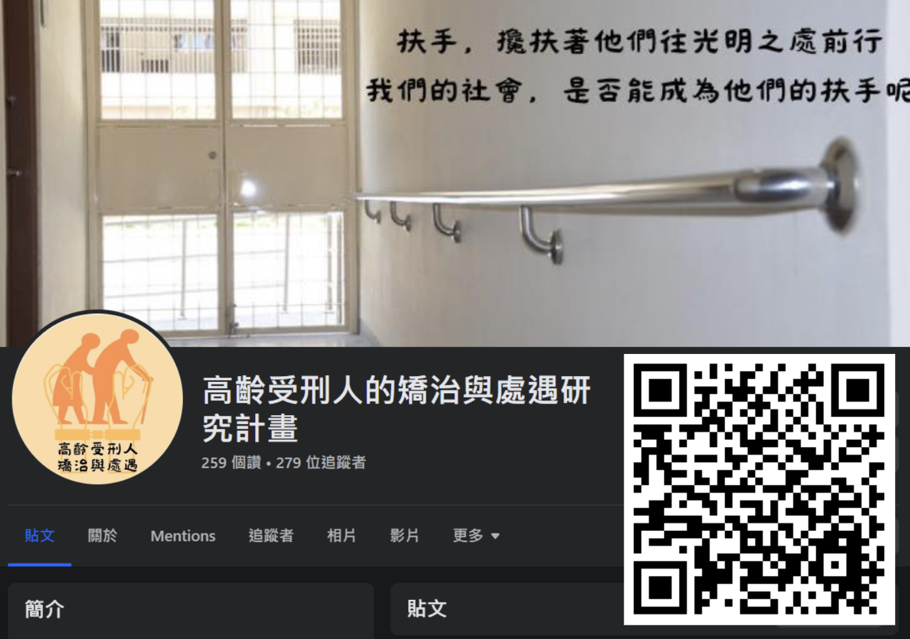

受刑人只是穿囚服的國民，並非憲法基本權保障的棄民
--司法院院長許宗力大法官
高齡受刑人面對的問題！
台灣進入高齡社會，高齡受刑人之人數與比例急劇增加，
他們的身心狀況需要特殊處遇，以及更多醫療資源，
若將與一般身心健全之受刑人安置於相同地方，不符合憲法的平等原則恐有違憲疑慮，
因此應該改善監獄硬體措施、保障高齡受刑人權益！
我們希望可以改變的政策
分監：提供高齡受刑人所需的醫療專區，規劃設置病床與輔助設備。
修法：中央修法並統一各監所政策大方向，參考聯合國身心障礙者權利公約(CRPD)修訂監獄相關規範。
機構安置：政府編列預算，向養護機構買下數個床位，讓高齡受刑人可以在戶籍所在地附近機構安置。
後續追蹤：要求機構限期處理、定期匯報，將安置紀錄匯報給案戶籍地之直轄市，證明安置情況。
憲法審查：以憲法合憲審查標準檢驗各個提出的政策
參訪雲林第二監獄實地探查
我們言就團對與雲林地二監獄開會討論，
並且進入監獄參訪各處（舍房、工作場所、食堂、受刑人作品）。
校園合作舉辦講座
與前鋒國中合作舉辦高齡受刑人相關宣教，
以及嘉義縣民雄鄉豐收老人社區發展協會宣教交流！
公共政策網路參與平台
在公共政策公民參與平台上提起「高齡受刑人矯治」的四項政策議案，
藉由公民附議連署使政府重視。

Facebook
臉書社群中撰寫許多高齡受刑人文章，
以圖文方式傳播相關知識。
其他社群平台會以限時動態方式，
用有趣的方式與大家互動與知識的科普。